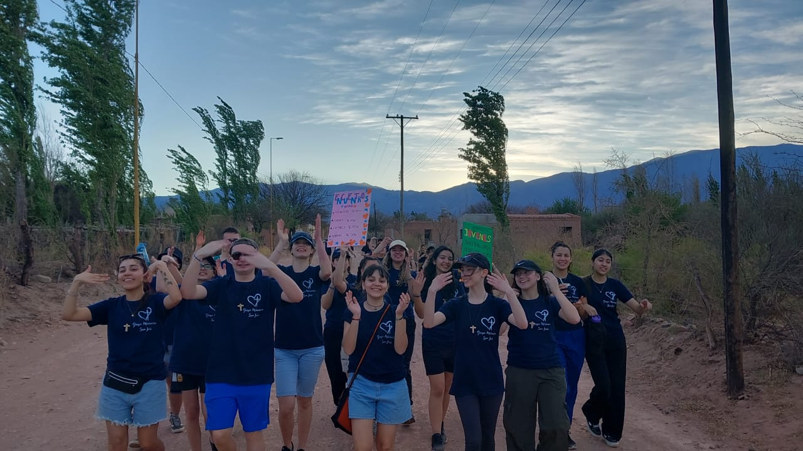
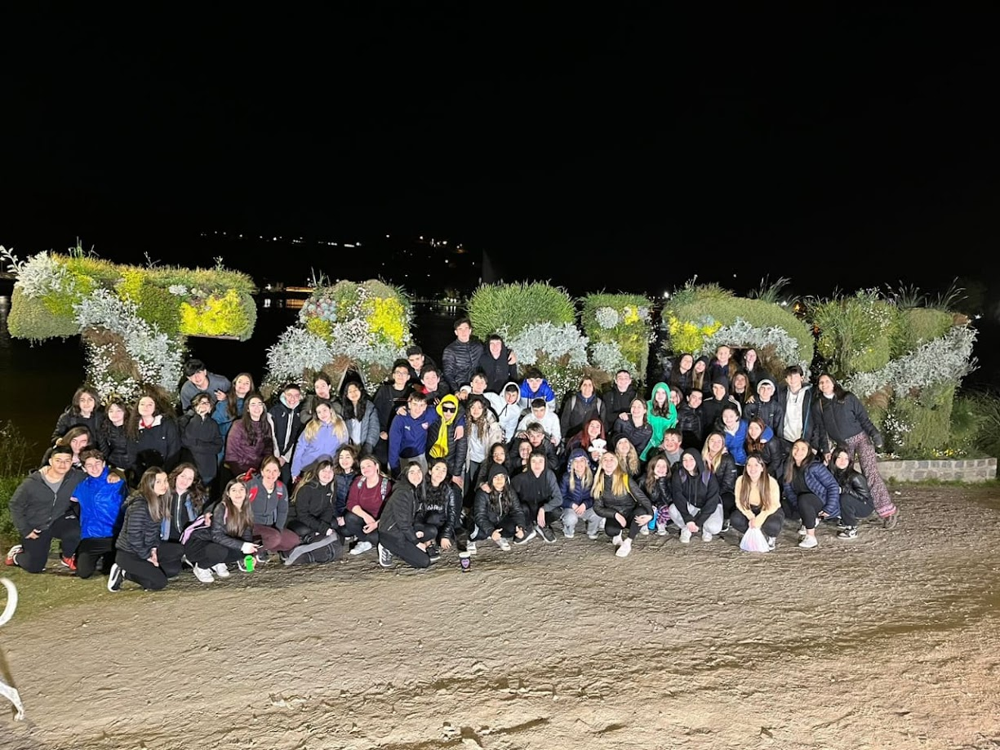
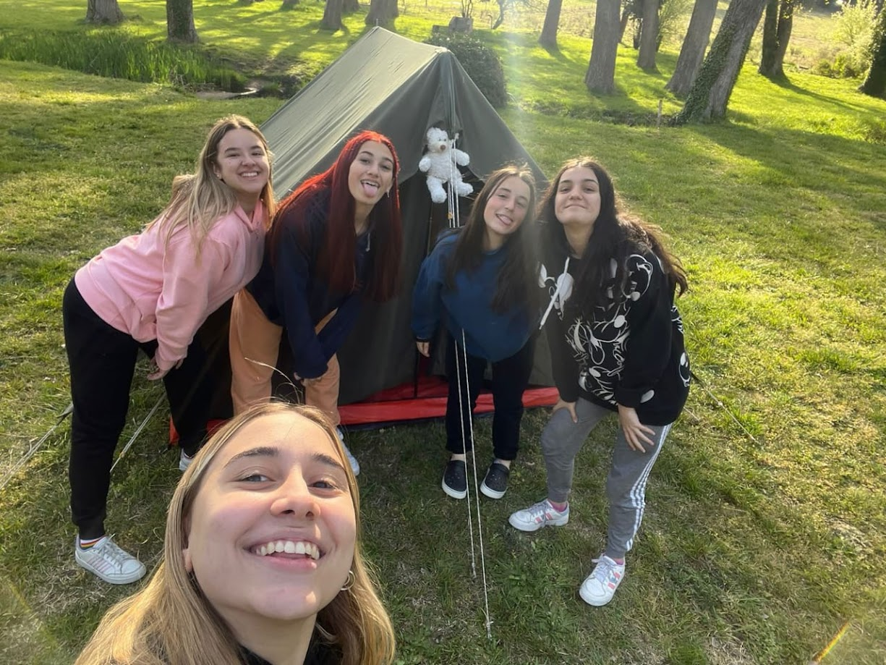
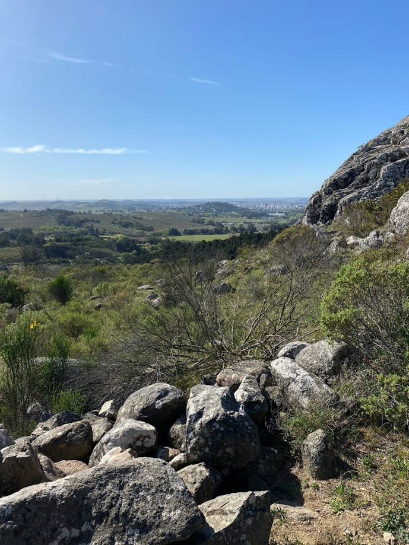

Catamarca
Palo Blanco 2023-2024
Nuestro colegio nos da la posibilidad de en cuarto año ir a misionar, nosotras con un poco de miedo e incertidumbre decidimos ir. Nos preparamos a lo largo de todo el año para poder, junto a los profes que nos acompañan en todo este proceso. Creamos diferentes comisiones dentro de la comunidad, como la radio que se encarga de armar charlas sobre temas interesantes para comunicar en la radio del pueblo, la comisión de niños que se encarga de hacer encuentros para que ellos se diviertan y aprendan con nosotros, también está la de jóvenes y adultos que se encarga de organizar encuentros interesantes para ellos, que los harán ser la mejor versión de ellos mismos. Cuando hablamos de Catamarca nos brillan los ojos y nuestro corazón se enciende, para nosotras fue una experiencia única e inigualable. Este año fue la segunda vez que íbamos a misionar allá y es impresionante cómo la gente se acuerda de vos, de tu nombre, de las cosas que les contaste, entre otras cosas. El amor que te da la gente es indescriptible, esperan con ansias nuestra llegada. Lo más hermoso es compartir con el otro, tanto con los del pueblo, como con nuestros compañeros, cada cosa aunque sea super chiquita tiene mucho significado, cada charla a corazón abierto, cada cena riéndonos de la mesa, cada abrazo, cada matecito, cada risa de los niños de allá, cada anécdota que te cuentan los jóvenes, cada casa que visitan y nos tratan como si fueramos de la familia. No hay sensacion mas linda que misionar, ayudar al otro a crecer y crecer nosotros como persona.


Tandil
Campamento de 3ro 2022
También tuvimos otra experiencia muy linda dentro del cole, que fue Tandil. Fue nuestro primer campamento del secundario, porque como fue pandemia no pudimos hacer el de primer y segundo año. Nosotras sentimos que este campameto fue algo importante en el recorrido de nuestra secundaria, ya que nos unimos mucho más como curso y formamos amistades muy lindas, además de momentos inolvidables. También pudimos conocer un poco más a los adultos que nos acompañaron como Eze, Barby, Rama y Claudia.
 